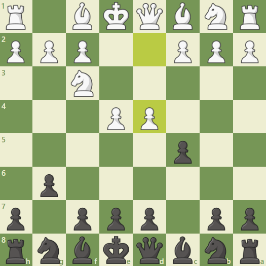

Wariant przyspieszonego smoka
Obrona Sycylijska w wariancie przyspieszonego smoka, nazywana również smokiem przyspieszonym lub smokiem, to jedna z najbardziej dynamicznych i agresywnych opcji dla graczy czarnych w odpowiedzi na ruch 1.e4 białych. Charakteryzuje się następującymi posunięciami:
- e4 c5
- Nf3 d6
- d4 cxd4
- Nxd4 Nf6
- Nc3 g6
Wariant ten jest jednym z najbardziej ambitnych i agresywnych sposobów, w jaki czarne mogą odpowiedzieć na otwarcie białych. Czarne szykują się do stworzenia asymetrycznej pozycji, w której starają się przeważyć szalę na swoją korzyść poprzez atak na skrzydle królewskim.
Kluczowe cechy smoka przyspieszonego to:
Atak na skrzydle królewskim: Głównym celem smoka przyspieszonego jest atak na skrzydle królewskim. Czarne planują rozwinięcie gońca na g7 i hetmana na h5, tworząc potencjalną baterię skierowaną przeciwko królowej białych. Ten agresywny plan ma na celu stworzenie presji na królewskim skrzydle przeciwnika.
Rozwój figur: Czarne starają się rozwijać swoje figury w sposób aktywny, kierując je na skrzydło królewskie. Po posunięciu 5...g6, czarny skoczek na f6 może być rozwinięty do g4, natomiast gońce mogą znaleźć się na g7 i f6. Hetman może również dołączyć do ataku, stając na h5 lub g4.
Obrona smoka: Obrona smoka jest znana z tego, że potrafi przetrwać silne ataki ze strony białych, dzięki solidnej strukturze pionowej. Struktura pionowa f7-g6-h7 tworzy "smoczą fortecę", która jest trudna do przełamania, zapewniając czarnym solidną obronę.
Kreowanie kontrataku: Podczas gdy czarne atakują na skrzydle królewskim, mogą także wykorzystać to, że białe skupiają się na królewskim skrzydle, aby przeprowadzić kontratak na skrzydle damy lub w centrum.
Smok przyspieszony jest otwarciem pełnym taktycznych możliwości, które wymaga precyzyjnego i agresywnego grania. Jest to otwarcie popularne zarówno wśród graczy klubowych, jak i mistrzowskich, ze względu na swoją dynamiczną naturę i możliwość prowadzenia gry na zwycięstwo.
